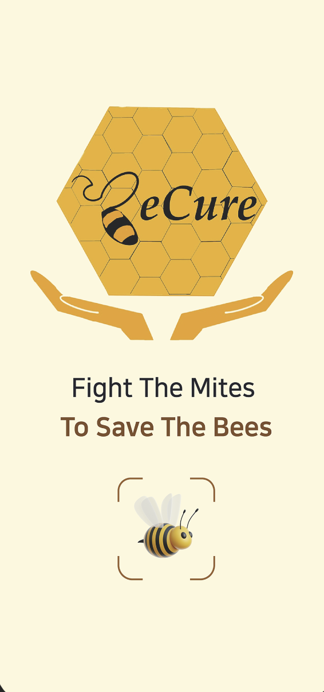
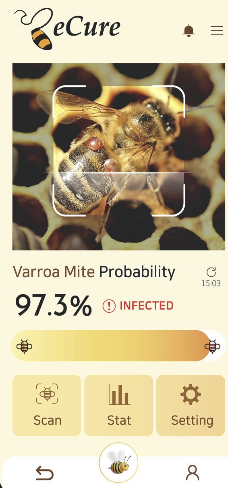
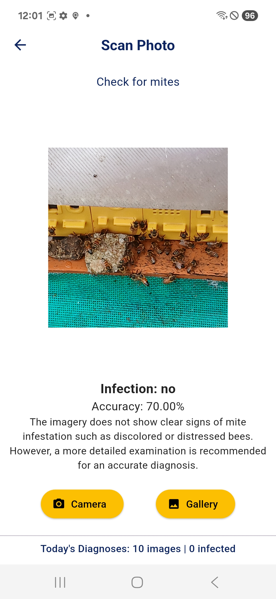

Real-Time Dashboard
Live mite counts, hive health index, and quick status at a glance.
AI-powered hive monitoring app developed by BeeWise team to help beekeepers detect Varroa destructor infestations early, prevent colony collapse, and protect global food security through real-time analysis.
Bees are essential pollinators, contributing to over 30% of the world's food production and sustaining biodiversity. However, Varroa mites weaken bees' immune systems, spread disease, and threaten entire colonies—causing annual agricultural losses of up to $57.7 billion USD worldwide.
BeeCure empowers beekeepers everywhere to monitor hives using only their smartphones, detect early signs of infestation, and take preventive action—ensuring both ecological balance and sustainable agriculture.


BeeCure isn't just a tool—it's part of a global movement to restore balance between humans, technology, and nature. By integrating AI into beekeeping, we ensure earlier detection, stronger hives, and healthier ecosystems.
With an estimated $810 million market potential and a 20% boost in global crop yields, BeeCure shows how youth-led AI innovation can create real impact for both environment and economy.

Manage multiple hives from any browser, sync data from the mobile app, and visualize mite trends, hive health, and alerts in real time.
Live mite counts, hive health index, and quick status at a glance.
Seamless sync with the mobile app for continuous monitoring.
Trend forecasting with early-risk warnings and suggestions.
Filter, search, and compare hives side-by-side across sites.